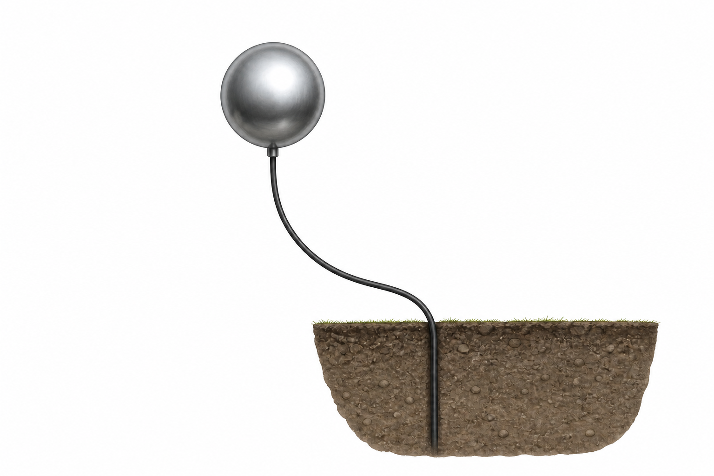
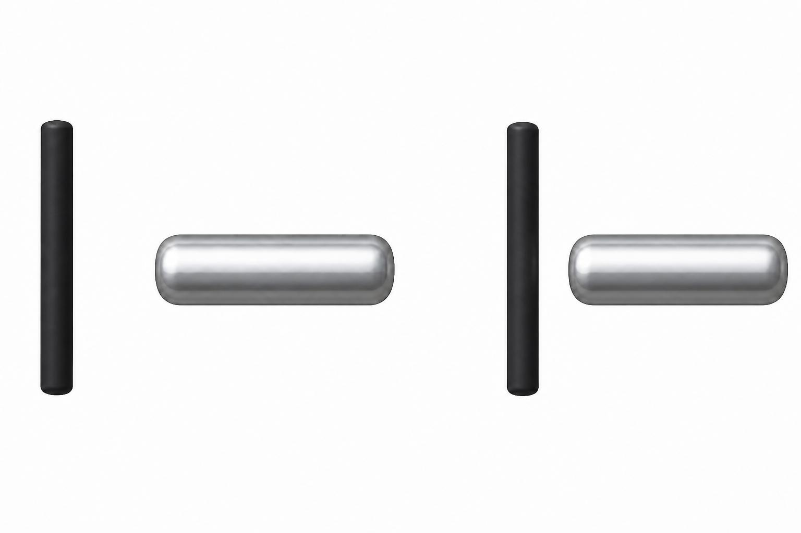
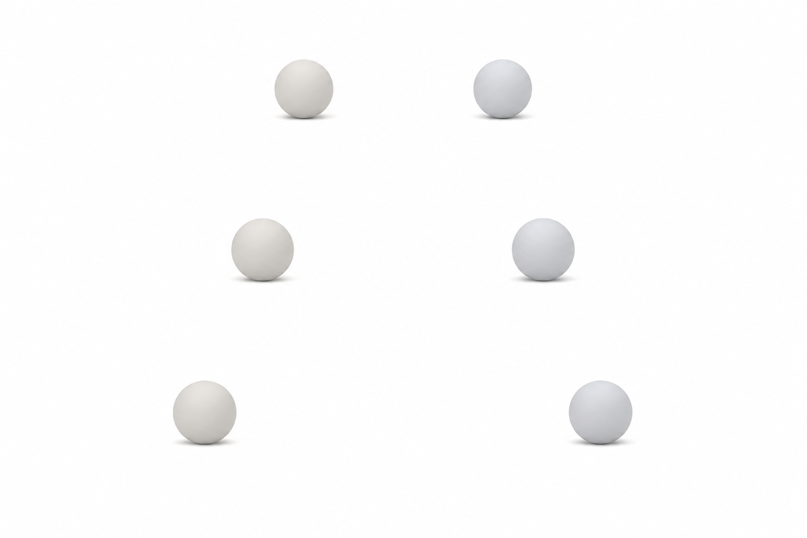
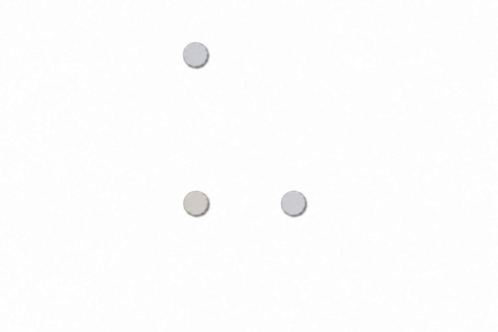
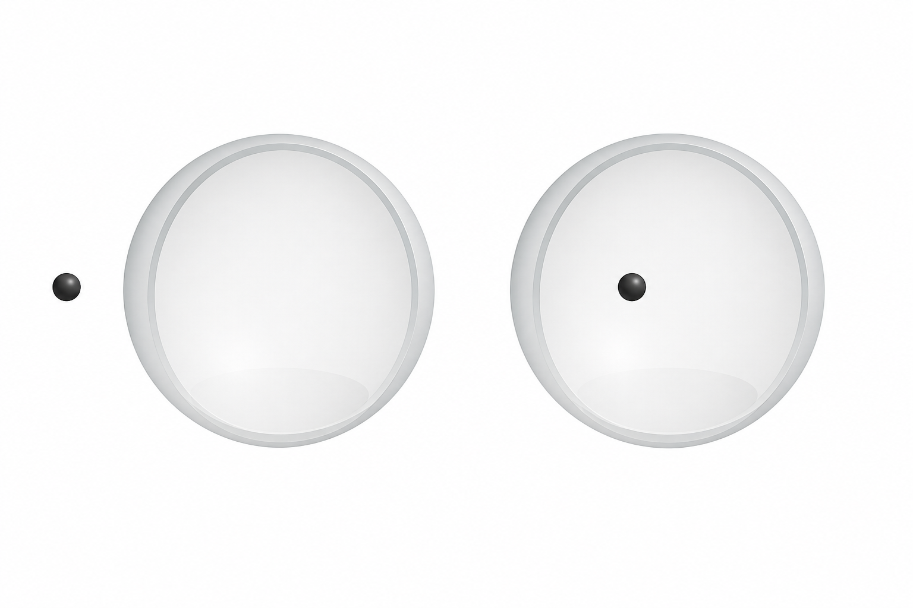
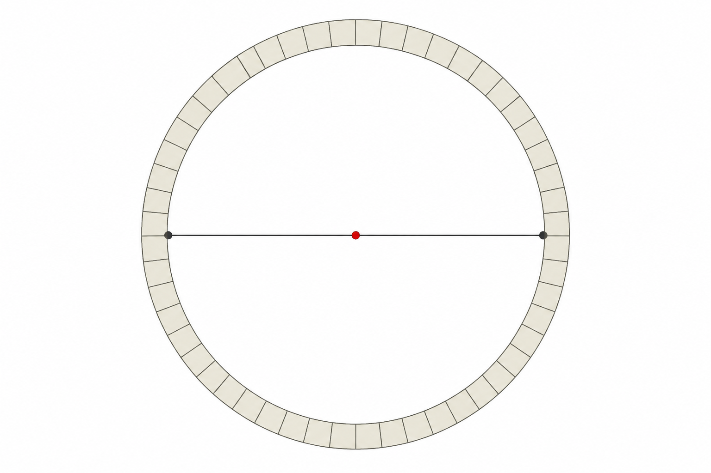

21장 쿨롱 법칙
전하(Electric charge)와 전기력(Electric force)
PHY1002 · 일반물리 II
1
쿨롱 힘 탐색
2
전하량·거리 의존성
3
전하의 두 종류
- 양전하(positive charge), 음전하(negative charge)
- 같은 부호: 척력(repulsion)
- 다른 부호: 인력(attraction)
- 양·음 전하량의 합이 0: 중성(electrically neutral)
- 순전하(net charge): 양·음 전하량의 불균형
4
전자 이동과 대전
- 원자핵: 양성자(proton)와 중성자(neutron)
- 중성 원자: 양성자 수와 전자(electron) 수 동일
- 전자 획득: 음전하
- 전자 손실: 양전하
- 보통의 고체 마찰·접촉 대전(charging): 전자 이동
5
도체와 부도체
| 물질 | 전하의 미시적 거동 | 대표 예 |
|---|---|---|
| 도체(conductor) | 전도 전자 이동·재배치 | 금속, 인체, 수돗물 |
| 부도체(insulator) | 전하 이동 제한·국소화 | 고무, 플라스틱, 유리 |
| 반도체(semiconductor) | 조건에 따라 전도성 변화 | Si, Ge |
| 초전도체(superconductor) | 특정 저온에서 저항 0 | 초전도 자석 |
6
접지(Grounding)

도체(conductor)
전도 경로
지구(ground)
7
유도 전하(Induced charge)
8
중성 도체의 인력

−
+
−
가까운 인력 > 먼 척력
9
힘 벡터의 방향

++
−−
+−
10
쿨롱의 역제곱 법칙
11
쿨롱 법칙의 벡터형
12
전기력과 중력
13
단위 분석(Dimensional analysis)
14
두 점전하의 힘
서로 다른 부호 → 인력
15
중첩 원리(Superposition)
16
2차원 자유물체도

+
+
−
17
힘의 성분 합
−x축에서 위쪽으로 36.9°
18
정전기적 평형점
작은 전하 오른쪽 · x축 변위에 대해 불안정
19
구형 껍질 정리(Shell theorem)

q
q
외부: 중심의 점전하 Q와 동일
내부:
20
구형 도체의 전하
- 정전기 평형(electrostatic equilibrium): 잉여 전하는 외부 표면
- 고립된 구형 도체 + 외부장 없음: 균일한 표면 분포
- 주변 전하 또는 외부장: 비균일한 표면 분포 가능
- 동일한 두 도체구를 접촉·전도 연결 후 평형: 대칭 환경에서 총전하의 절반씩 재분배
- 점전하 근사: 구의 크기보다 중심 간 거리가 충분히 큼
21
전류와 전하량
두 번째 식: 일정한 전류
22
전하의 양자화(Quantization)
적용 범위: 고립해 관측되는 보통 입자·거시 전하. 쿼크는 이지만 단독 관측되지 않음.
23
전자 수 계산
양전하 → 전자 개 제거
24
접촉과 재분배
조건: 동일한 두 도체구 · 접촉/전도 연결 · 대칭 환경
25
전하 보존(Conservation)
접지: 물체 + 지구를 하나의 계로 설정
26
입자 반응과 PET

γ
γ
27
핵심 정리
- 전하의 부호: 같은 부호 척력, 다른 부호 인력
- 점전하의 힘:
- 여러 전하: 힘 벡터의 중첩(superposition)
- 전하의 양자화:
- 고립계의 총전하 보존
28